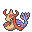
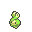

Attacke
Nassmacher
Wasser Status27 Pokémon
Status27 Pokémon
Benutzer wird nass, so dass er Feuer besser standhält.
Werte
- Typ
- Wasser
- Kategorie
- Status
- Stärke
- —
- Genauigkeit
- trifft immer
- AP
- 15
- Ziel
- Ganzes Feld
Durch Level-Aufstieg
Diese Pokémon lernen die Attacke auf dem angegebenen Level.
 #054EntonWasserLv. 1
#054EntonWasserLv. 1 #055EntoronWasserLv. 1
#055EntoronWasserLv. 1 #060QuapselWasserLv. 1
#060QuapselWasserLv. 1 #061QuaputziWasserLv. 1
#061QuaputziWasserLv. 1 #086JurobWasserLv. 7
#086JurobWasserLv. 7 #118GoldiniWasserLv. 1
#118GoldiniWasserLv. 1 #119GolkingWasserLv. 1
#119GolkingWasserLv. 1 #183MarillWasserFeeLv. 5
#183MarillWasserFeeLv. 5 #184AzumarillWasserFeeLv. 1
#184AzumarillWasserFeeLv. 1 #271LombreroWasserPflanzeLv. 20
#271LombreroWasserPflanzeLv. 20 #279PelipperWasserLv. 1
#279PelipperWasserLv. 1 #283GehweiherKäferWasserLv. 14
#283GehweiherKäferWasserLv. 14 #284MaskeregenKäferLv. 1
#284MaskeregenKäferLv. 1 #298AzurillNormalFeeLv. 5
#298AzurillNormalFeeLv. 5 #339SchmerbeWasserBodenLv. 6
#339SchmerbeWasserBodenLv. 6 #340WelsarWasserBodenLv. 1
#340WelsarWasserBodenLv. 1
#350MiloticWasserLv. 1 #368SaganabyssWasserLv. 5
#368SaganabyssWasserLv. 5 #380LatiasDrachePsychoLv. 4
#380LatiasDrachePsychoLv. 4
#406KnospiPflanzeGiftLv. 7
Als Ei-Attacke
Diese Pokémon können die Attacke von einem Elternteil erben.